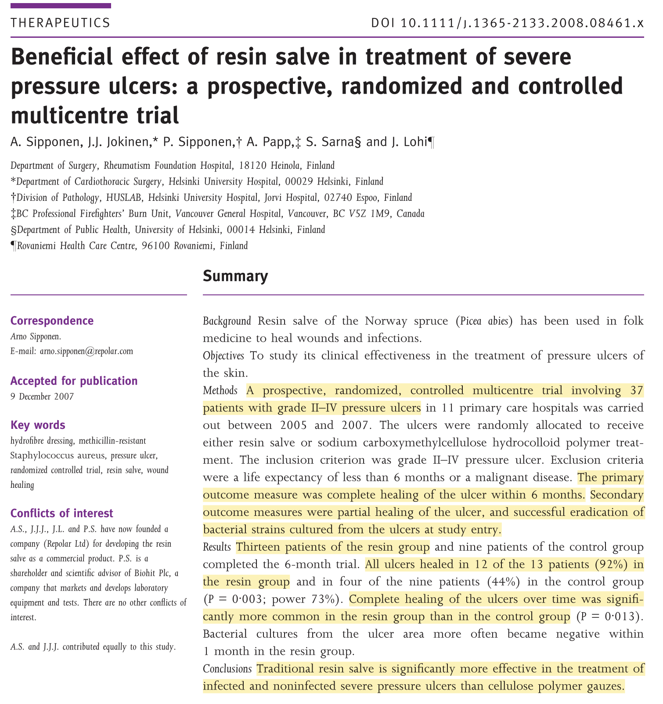

Clinical Study
A prospective, randomized, controlled multicentre trial evaluated Abilar® 10% resin salve in 37 patients with severe grade II–IV pressure ulcers across 11 primary care hospitals. Participants were randomized to receive either the resin salve (n=13) or a standard "modern" treatment consisting of sodium carboxymethylcellulose hydrocolloid polymer, with or without ionic silver (n=9). Dressings were changed daily for infected or discharging wounds, or every third day for clean wounds. The study followed patients for 6 months, with wound progress monitored monthly through digital photography and planimetric analysis of width, length, and depth.
Key Findings
94% of the ulcers (17 of 18) treated with Abilar® achieved complete healing within 6 months, compared to only 36% (4 of 11) in the control group (p = 0.003). The speed of healing was significantly faster in the resin group, with the superior effect of the salve becoming statistically evident after three months of treatment (p = 0.013). Additionally, bacterial cultures from the ulcer area became negative significantly more often within the first month in the resin group compared to the control group.

Download
Download PDFReference
Sipponen A, Jokinen JJ, Sipponen P, Papp A, Sarna S, Lohi J. Beneficial effect of resin salve in treatment of severe pressure ulcers: A prospective, randomized and controlled multicentre trial. British Journal of Dermatology. 2008 May;158(5):1055–62. doi:10.1111/j.1365-2133.2008.08461.x PubMed PMID: 18284391.
Back to study